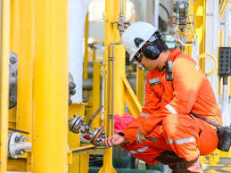
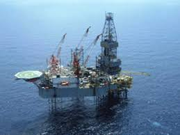
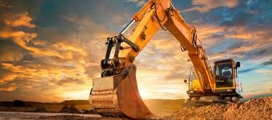

ELECTRICAL ENGINEERING
Our services In this area cover the following:• Interpretation of Engineering Design
• Installations and maintenance of Electrical equipments
• Panels and battery system
• Industrial and domestic cabling project
• High tension power routes
• Construction of power Hubs and Hook-Ups
• Installation of Earthening systems and cathodic protection
• Inspection, testing and commissioning of electrical installations

MECHANICAL AND STRUCTURAL ENGINEERING
Here, Our Services Include;• Scaffold erection/erection of support structures
• Mechanical instrumentations and transmission
• Corrosion control, painting and sand blasting
• Construction of pipelines
• Design and installation of central A/C Systems and tanks
• Refractory/insulation
• Maintenance of production equipments such as; Pumps, valves and air compressors

FIRE AND SAFETY ENGINEERING
Here, Our Services Include;• Fire materials/equipment, procurements/servicing
• Detectors, automatic sprinkler, hydrant system, hose reels
• Installation of electro safety system such as: fire alarm system, smoke
• Fumigation on site
• Waste disposal services
• Maintenance/inspection of fire equipment training and commissioning

PROJECT MANAGEMENT
GERANTZ Nigeria Limited Project Management service is built on integrity, experience, and professionalism. Our experienced project management team delivers project deliverables on-time and on budget with integrity. We take care of every aspect of the project management process, and bring the entire project team to work for our clients.Using a well-established project management processes, tools and techniques, we will define a specific set of activities and time line to keep the project on target during the planning, execution and close out of the project. Our industry-recognized project management methods include project risk management, detailed scheduling, probabilistic time and cost estimation.

CIVIL CONSTRUCTION
GERANTZ offers a comprehensive range of civil construction / project site inspection and testing services. This includes various specialized disciplines, methods and techniques. These services extend from the provision of complete site project teams (undertaking all facets of site inspection, testing and associated technical services) to single individuals undertaking a specific assignment. At GERANTZ Nigeria Limited, we offer a flexible portfolio of high-quality technically-based solutions tailored to specific client requirements and delivered by highly qualified personnel. Gerantz Nigeria Limited provides quality operational solutions for clients in the fast growing real estate and road construction in Nigeria.Our team of construction professionals offers a single source solution for all of our clients' needs. Our network of local offices and partners enable us to offer our clients the dual advantage of a strong local presence and broad geographic reach.
